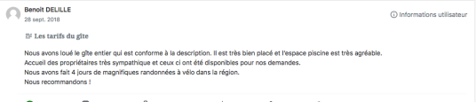

CLOS MARIE JOSEPH
Gîtes à Carpentras en Provence


Vue partielle avec le Studio en contrebas de la Maison et en dessous la piscine, puis le ravin vers l’ Auzon.
Un cadre unique en plein centre de Carpentras
Situé à 5 min à pied du centre ville de Carpentras , capitale du Comtat Venaissin , le Clos Marie Joseph propose la location d’un gîte dans un environnement chaleureux et verdoyant.
Le gîte, idéal pour les familles nombreuses ou plusieurs couples, propose jusqu’à 7 chambres et 13 couchages modulables selon les besoins.
Jeanne & Dominique seront heureux de vous accueillir dans cette demeure de charme qui combine la tranquillité de la campagne aux avantages du centre ville.
Voici ci-dessous les photos de quelques commentaires
